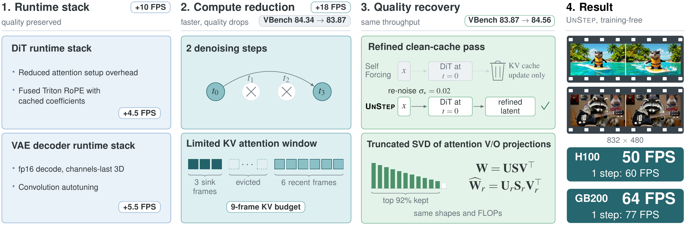

Optimize the runtime
Efficient attention calls and KV indexing, fused Triton RoPE, and VAE precision, memory-layout, and convolution optimizations.
Training-Free Acceleration of Causal Video Diffusion
with Fewer Steps Than Distillation
Meta Superintelligence Labs
The same model. A faster way to run it.
Few-step video models are fast, but not fast enough. UnStep is an inference-only wrapper that accelerates existing causal video models with fewer denoising steps, a bounded attention cache, and a faster transformer and decoder runtime.
Two training-free mechanisms recover lost quality: refining the existing clean-cache pass and applying truncated SVD to attention value and output projections. The result is faster generation from the same pretrained checkpoint.
Five-second video generation.
832 × 480. Batch size
one.

One wrapper, applied to Self Forcing, Causal Forcing, and LongLive 1.0 without retraining.
H100 results from the paper. Throughput is generation FPS, not video playback rate. Headline speeds are rounded.
| Checkpoint | FPS | VBench total |
|---|---|---|
| Self Forcing | 17.0 | 84.31 |
| + UnStep | 49.8 | 84.56 |
| Causal Forcing | 17.0 | 84.82 |
| + UnStep | 49.8 | 84.93 |
| LongLive 1.0 | 17.0 | 83.31 |
| + UnStep | 49.8 | 83.42 |
All at inference.
No finetuning. No redistillation.

Efficient attention calls and KV indexing, fused Triton RoPE, and VAE precision, memory-layout, and convolution optimizations.
Keep four denoising steps for the first chunk. Use two for later chunks, with a bounded temporal KV window.
Refine and reuse the existing clean-cache pass, then apply truncated SVD to the attention value and output projections.
Selected text-to-video examples.
Video could not be loaded. Open the MP4
Video could not be loaded. Open the MP4
Citation
Citation forthcoming.